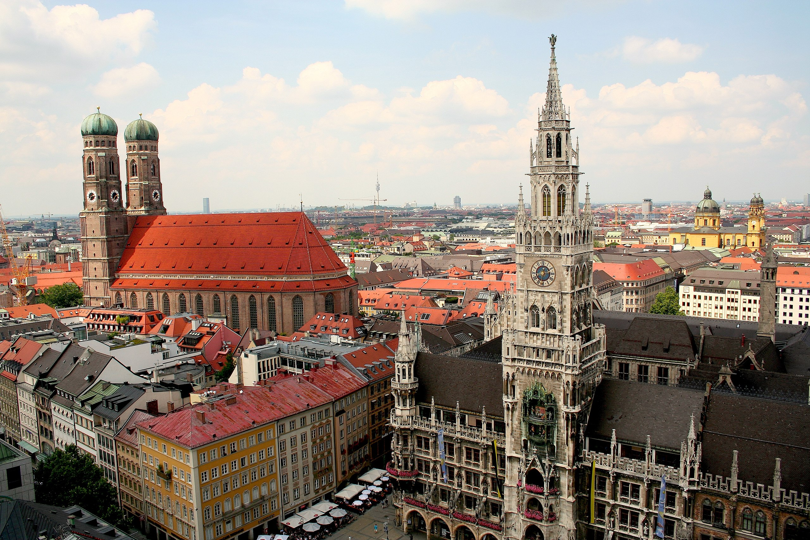
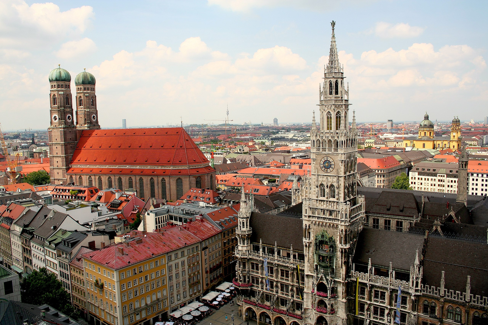

Мю́нхен — місто на річці Ізар на півдні Німеччини, у федеральній землі Баварія. Вільне місто, яке одночасно є столицею Баварії та адміністративного округу Верхня Баварія.
 МюнхенТель-Авів
Національний технічний університет України «Київський політехнічний інститут імені Ігоря Сікорського»
Мю́нхен — місто на річці Ізар на півдні Німеччини, у федеральній землі Баварія. Вільне місто, яке одночасно є столицею Баварії та адміністративного округу Верхня Баварія.
 Мюнхен